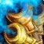
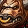
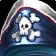
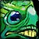
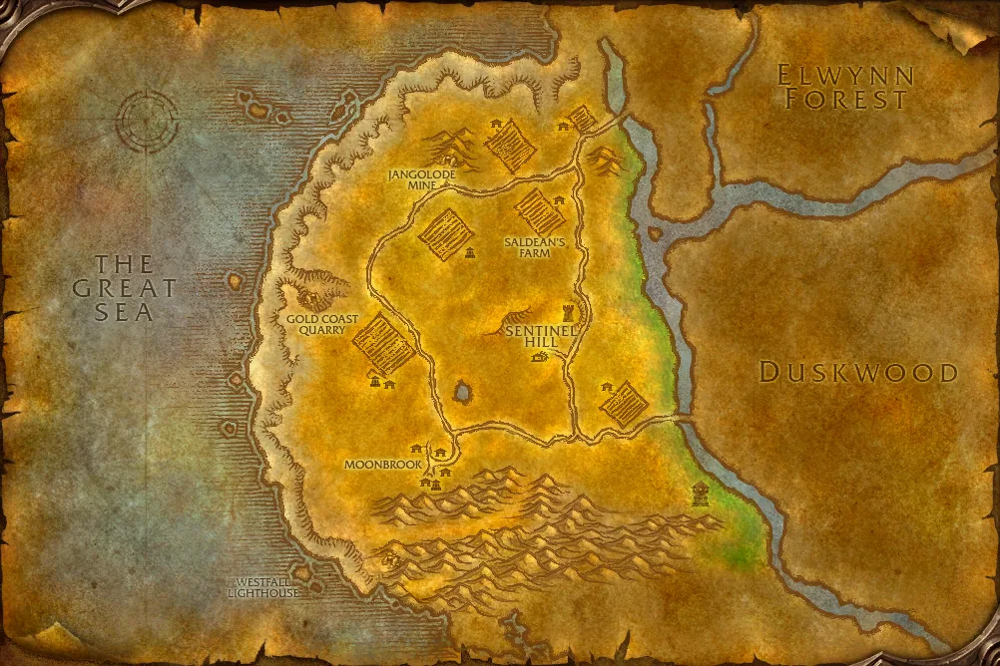

Übersicht
Level17–26
GebietWestfall
KategorieAllianzgebiet
TypClassic
Eingang: Moonbrook / Deadmines. Die Gebietskarte findest du im Reiter „Gebietskarte“.
Bosse & Loot
Icons: bekannte Item-IDs nutzen Original-Wowhead-Icons; übrige Einträge bekommen mindestens ein passendes Slot-/Waffenicon statt eines kaputten Bildes.
Rhahk'Zor
2 bekannte Loot-Einträge
Miner Johnson (Rare)
2 bekannte Loot-Einträge

Sneed's Shredder
4 bekannte Loot-Einträge
Gilnid
2 bekannte Loot-Einträge

Mr. Smite
3 bekannte Loot-Einträge

Captain Greenskin
3 bekannte Loot-Einträge
Edwin VanCleef
4 bekannte Loot-Einträge

Cookie
2 bekannte Loot-Einträge
Dungeonquests
Quelle: Wowhead Forever „Every Dungeon Quest“, aktualisiert 31.10.2026. Beta-Dungeons können noch unvollständig sein.
Allianzquests
Collecting Memories · Level 14Start: Stormwind – Wilder Thistlenettle /way 65 21
Oh Brother... · Level 15Start: Stormwind – Wilder Thistlenettle /way 65 21
Underground Assault · Level 15Start: Stormwind – Shoni the Shilent /way 55 13
Red Silk Bandanas · Level 14Start: Westfall – Scout Riell /way 56 47Defias-Brotherhood-Vorquests
The Defias Brotherhood · Level 14Start: Westfall – Gryan Stoutmantle /way 56 47
Destruction in Deadmines · Level 14Start: Westfall – Questkette ab Testing the Wells
The Unsent Letter · Level 16Start: Drop von Edwin VanCleefStartet später Stockade Riots
Hordequests
Keine fraktionsspezifischen Quests in der lokalen Liste. Siehe Wowhead-Quelle unten.
Neutral / Klasse
The Test of Righteousness / A Moon-Kissed Blade · Level 20Start: Paladin-KlassenquestFraktionsabhängige Paladin-Variante
Westfall – Dungeon-Eingang

Marker: Moonbrook / Deadmines
Die Karte zeigt das komplette Gebiet, nicht mehr nur eine schematische Platzhalterfläche.
Die Karte zeigt das komplette Gebiet, nicht mehr nur eine schematische Platzhalterfläche.